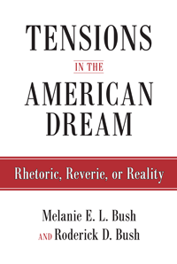

<body bgcolor="#FFFFFF" text="#000000" link="#0000FF" vlink="#CC0000" alink="#CC0000"><center><hr width="350" size="1" align="center" noshade>The contradictions of the promise - and reality - of the American Dream<hr width="350" size="1" align="center" noshade><p><a href="https://cdcshoppingcart.uchicago.edu/Cart/ChicagoBook.aspx?ISBN=9781592138371&&PRESS=temple" target="_top">Buy this book!</a> | <a href="https://cdcshoppingcart.uchicago.edu/Cart/Cart.aspx?PRESS=temple" target="_top">View Cart</a> | <a href="https://cdcshoppingcart.uchicago.edu/Cart/Cart.aspx?PRESS=temple" target="_top">Check Out</a></p><p></p></center><!--none//--><h1>Tensions in the American Dream</h1>
<H2>Rhetoric, Reverie, or Reality</H2>
<h3>Melanie E. L. Bush and Roderick D. Bush</h3>
<P>cloth 1-59213-837-3 $84.50, Jan 15, <FONT COLOR=#990033>Available</FONT>
<br>paper 1-59213-838-1 $29.95, Jan 15, <FONT COLOR=#990033>Available</FONT>
<br>Electronic Book 1-59213-839-X $29.95 <FONT COLOR=#990033>Available</FONT>
<BR> 258 pp
6x9
13&nbsp;tables
</P><BLOCKQUOTE><I>"</I>Tensions in the American Dream<I> breaks new ground as it deals with a unique contemporary dilemma in the American experience: the contradiction between U.S. imperialism and traditional American ideology of liberation. The topic is timely, and the authors’ arguments are strong and clear. This study, with its detailed critical analysis, is a major advancement in the field."</i><br>&#151<b>Walter T. Howard</b>, Professor of American History at Bloomsburg University in northeastern Pennsylvania and the author of <i>We Shall Be Free! Black Communist Protests in Seven Voices</i></I></BLOCKQUOTE>
<P>Could the promise of upward mobility have a dark side? In <I>Tensions in the American Dream</I>, Melanie and Roderick Bush ask, “How does a ‘nation of immigrants’ pledge inclusion yet marginalize so many citizens on the basis of race, class, and gender?” The authors consider the origins and development of the U.S. nation and empire; the founding principles of belonging, nationalism, and exceptionalism; and the lived reality of these principles.
<P><I>Tensions in the American Dream</I> also addresses the relevancy of nation to empire in the context of the historical world capitalist system. The authors ask, “Is the American Dream a reality questioned only by those unwilling or unable to achieve it? What is the ‘good life,’ and how is it particularly ‘American’?”
<BR>&nbsp;<h2>Excerpt</h2><P>Excerpt available at <a href="http://www.temple.edu/tempress">www.temple.edu/tempress</a></p>
<BR>&nbsp;<h2>Reviews</h2>
<p><i>"</i>Tensions in the American Dream<i> is a hopeful book. It empirically examines the variations and contradictions through which U.S. residents construct identities and orient their lives in an era of neoliberalism.... The book draws on an impressive range of literature.... Another centrally important point advanced in the conceptual frame of the book situates U.S. nationalism and white supremacy in the broader context of global capitalism and empire.... Melanie and Roderick Bush advance another trajectory of sociology that emerged in reaction to
twentieth-century eugenics and European fascism, positive science culture, and decolonization. This is a sociology that emphasizes social
transformation, liberation, emancipation, and a critical methodology and epistemology."</i><br>&#151<i><b>Contemporary Sociology</i></b>
<p><i>"At a time when those concerned with issues of equality, peace and justice desperately need systematic ways of addressing multiple crises in the US and globally and, most especially, the emergence of ever more virulent forms of white supremacy in politics, the economy, and culture, the work of these two authors, both individually and together, is indispensable.... The Bushes offer a way to think about how people experience the tension of living in a moment of historical crisis.... </i>Tensions in the American Dream<i> reminds us that the most important insights into the current state of affairs in the US lie not with the media or ruling political and economic circles, but with people themselves. The historical crisis is reflected in the struggle to reconcile dominant ideology with lived experience. The voices shared in this volume speak of that challenge loud and clear."</i> <br>&#151<i><b>Socialism and Democracy</i></b>
<BR>&nbsp;<h2>Contents</h2><P>
<p>List of Tables
<br>Preface
<p><b>PART I. INTRODUCTION</b>
<br>1. Key Questions and Concepts
<br>2. Citizenship and Nation
<br>3. The Shifting Terrain Makes Clear the Tensions in the American Dream
<p><b>PART II. STORIES OF MY AMERICA</b>
<br>4. Reflections on the Structural Logic of the System
<br>5. Thoughts on the Current Juncture
<br>6. Perspectives on the American Dream
<br>7. Expressions of Revolt against the Systems
<p><b>PART III. TENSIONS IN THE AMERICAN DREAM: RHETORIC, REVERIE, OR REALITY?</b>
<br>8. Nation: Empire or Liberation
<br>9. Racial Nationalism and the Multiple Crises of the U.S. Nation
<br>10. Going Forward, with Reflections on the Revolts of the Past Decade
<p>Acknowledgments
<br>Notes
<br>References
<br>Index
</P><BR>&nbsp;<H2>About the Author(s)</H2>
<P><b>Melanie E. L. Bush</b> is an Associate Professor in the Department of Anthropology and Sociology at Adelphi University and the author of <i>Everyday Forms of Whiteness: Understanding Race in a "Post-Racial" World</i> (the second edition of <i>Breaking the Code of Good Intentions: Everyday Forms of Whiteness</i>).</P>
<P><b>Roderick D. Bush</b> (1945-2013) was a Professor in the Department of Sociology and Anthropology at St. John’s University and the author of <i><a href="1882_reg.html" target="_top">The End of White World Supremacy: Black Internationalism and the Problem of the Color Line</a></i> (Temple), which won the Paul Sweezy Marxist Sociology Book Award from the American Sociological Association. Visit his website at <a href="http://rodbush.org/" target="new">http://rodbush.org/</a>.</P>
<BR><H2>Subject Categories</H2>
<p><A HREF="/tempress/african.html" TARGET="_top">African American Studies</a>
<BR><A HREF="/tempress/sociology.html" TARGET="_top">Sociology</a>
<BR><A HREF="/tempress/american.html" TARGET="_top">American Studies</a>
</p>
<p align="center"><a href="https://cdcshoppingcart.uchicago.edu/Cart/ChicagoBook.aspx?ISBN=9781592138371&&PRESS=temple" target="_top">Buy this book!</a> | <a href="https://cdcshoppingcart.uchicago.edu/Cart/Cart.aspx?PRESS=temple" target="_top">View Cart</a> | <a href="https://cdcshoppingcart.uchicago.edu/Cart/Cart.aspx?PRESS=temple" target="_top">Check Out</a></p><p><font face="Arial" size="1"><a href="copyright.html" onMouseOver="window.status='Web Copyright Policy';return true;" onMouseOut="window.status=''" title="Web Copyright Policy">&copy;</a> 2016 <a href="http://www.temple.edu" target="new" onMouseOver="window.status='Link to Temple University home page';return true;" onMouseOut="window.status=''" title="Link to Temple University home page">Temple University</a>. All Rights Reserved. http://www.temple.edu/tempress/titles/1975_reg.html</font></p>